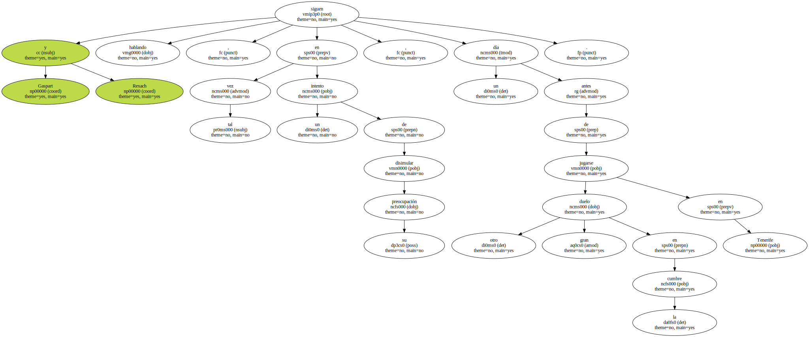
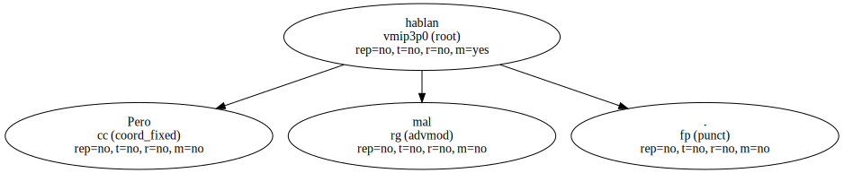
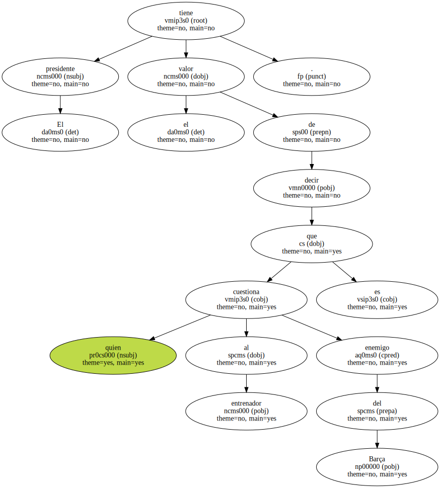
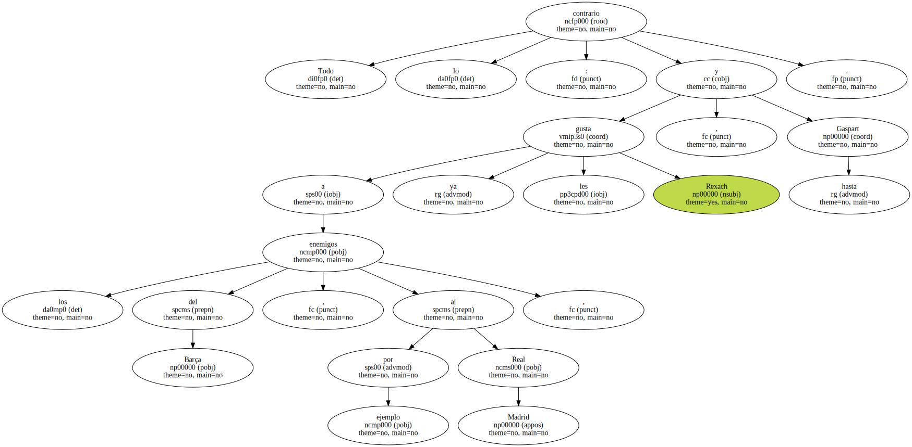
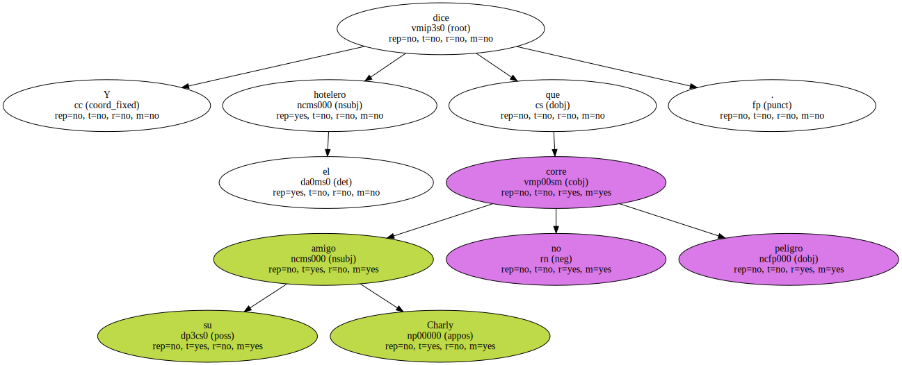
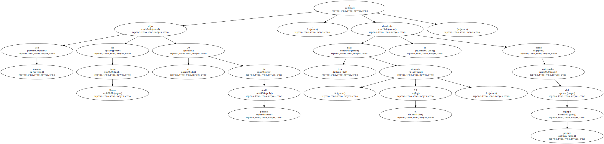
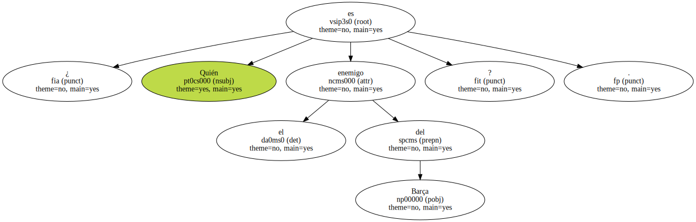
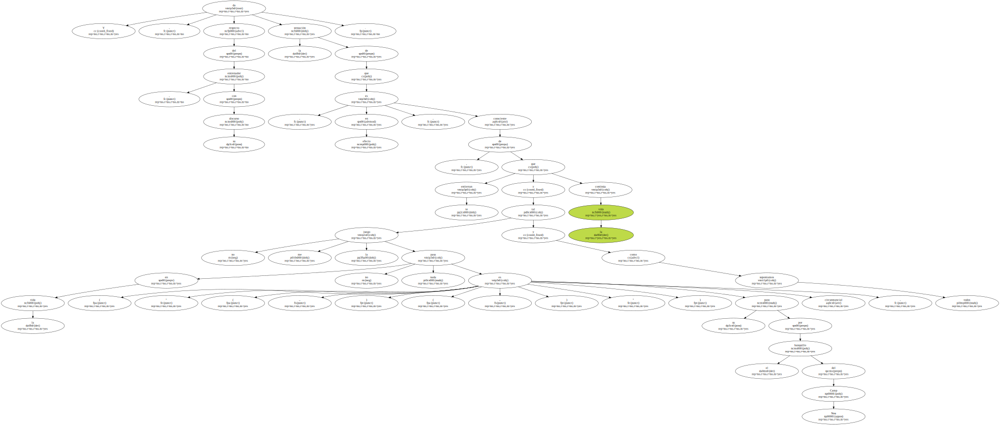
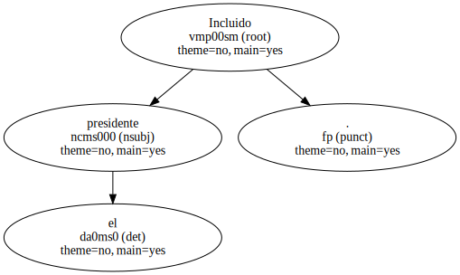
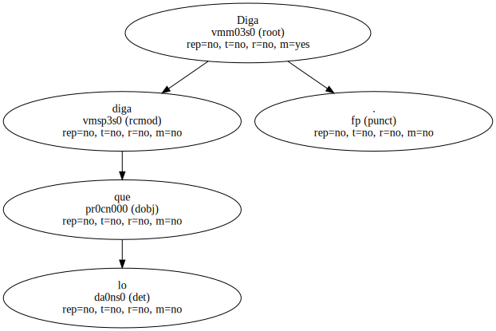

Gaspart y Rexach siguen hablando , tal vez en un intento de disimular su preocupación , un día antes de jugarse otro gran duelo en la cumbre en Tenerife.
Hacen bien.

Pero hablan mal.
El presidente tiene el valor de decir que quien cuestiona al entrenador es enemigo del Barça.
Todo lo contrario : a los enemigos del Barça , por ejemplo al Real Madrid , ya les gusta Rexach , y hasta Gaspart.
Y dice el hotelero que su amigo Charly no corre peligro.
Eso mismo dijo de Serra Ferrer el 20 de abril pasado , y tres días después , el 23 , lo destituía como entrenador del primer equipo.
¿ Quién es el enemigo del Barça ?.
Y , respecto del entrenador , con su discurso ( " no me la juego ( ... ) en la vida no pasa nada ( ... ) te entierran y la vida continúa " ) , da la sensación de que , en efecto , es consciente de que su paso por el banquillo del Camp Nou es circunstancial , tal y como todos suponíamos.
Incluido el presidente.
Diga lo que diga.
